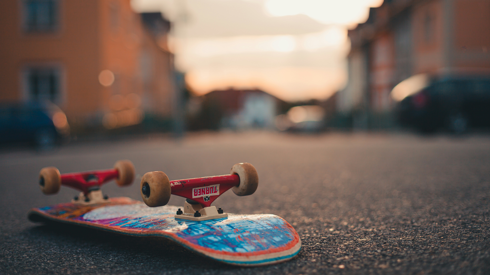

Concrete Disciples honors the visionaries who transformed street skating from a fringe activity into a global culture. It celebrates those who saw potential in pavement, who turned curbs, rails, and loading docks into stages for creativity and defiance. These skaters didn’t follow paths—they carved them, inspiring generations to view the urban landscape as a playground of possibility. Their influence echoes in every trick, every DIY spot, and every skater who chooses expression over convention. By pushing boundaries and embracing risk, they laid the groundwork for a movement that’s as much about identity and resilience as it is about style. Their legacy lives not just in footage, but in the spirit of every rider who dares to reinterpret the streets.

Rodney Mullen
The Godfather of Street TricksRodney Mullen didn’t just invent tricks—he invented the grammar of street skating. From the kickflip to the darkslide, his technical breakthroughs laid the foundation for how skaters interact with the urban world. But beyond mechanics, Mullen brought a philosophical depth to skateboarding, treating it as a form of self-expression and mental clarity. His influence is everywhere: in the tricks we name, the way we film, and the idea that creativity can be engineered one flip at a time
Mark Gonzales
The Prophet of the PavementMark Gonzales is the heartbeat of street skating’s soul—unpredictable, poetic, and utterly fearless. Where others saw sidewalks, Gonz saw stages. He pioneered handrail skating and turned raw city terrain into a playground of improvisation. His style is loose, expressive, and deeply human, reminding skaters that imperfection and spontaneity are part of the magic. Gonz didn’t just push boundaries—he ignored them, giving skateboarding its artistic license and emotional depth.
Daewon Song
The Wizard of SurfacesDaewon Song approaches street skating like a puzzle only he can solve. With unmatched technical precision and a mind wired for unconventional terrain, he transforms picnic tables, fences, and debris into canvases for jaw-dropping lines. His creativity isn’t just about difficulty—it’s about vision. Daewon sees possibility where others see limits, and his skating invites the world to rethink what’s skateable. He’s not just a technician—he’s a reimaginer of space, proving that genius often hides in plain sight.